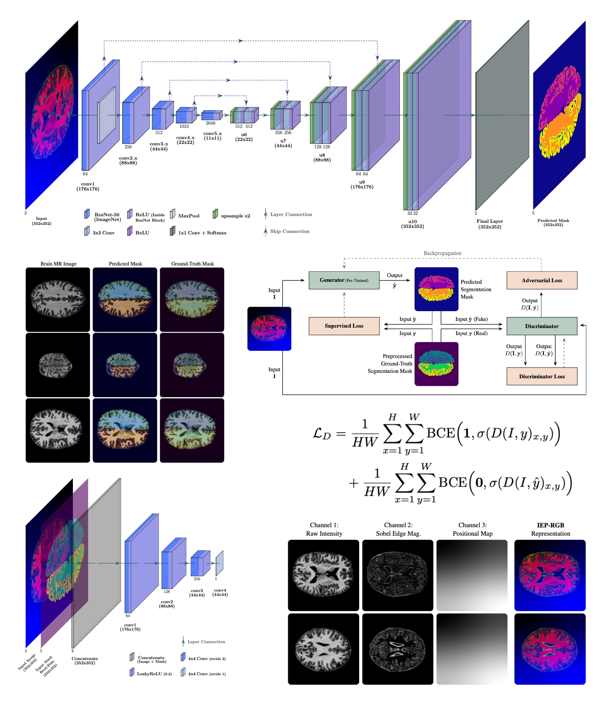

HOME
RESEARCH
PROJECTS
CV
ABOUT
Publication
Pre-Trained Generative Adversarial Network for Limited-Labeled Brain MRI Segmentation
Mehdi Karami, Betsabeh Tanoori (2026) – engrXiv,
DOI: 10.31224/6504

Figure 1. Schematic of the proposed method.